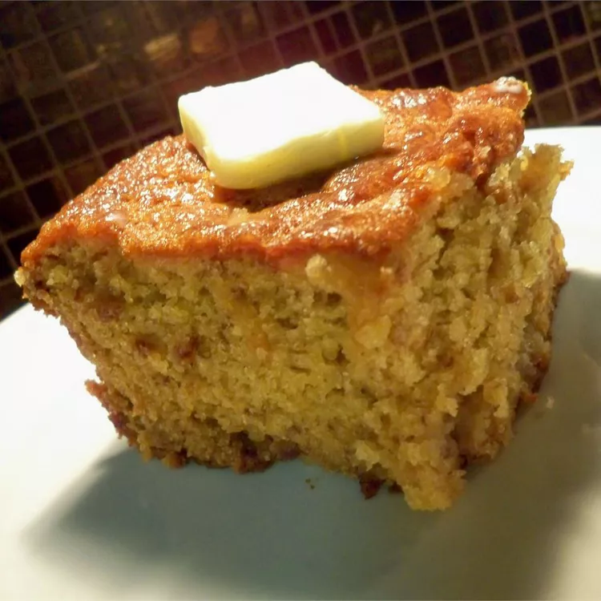

Grandma's Banana Bread

Descriptions
A super moist banana bread which uses six bananas!
Ingredients
- 3 cups sugar
- 1 cup margarine, softened
- 1 teaspoon vanilla extract
- 4 eggs
- 3 1/2 cups all-purpose flour
- 2 teaspoons baking soda
- 1/4 teaspoon salt
- 1 cup buttermilk
- 6 very ripe bananas, mashed
Steps
-
Preheat oven to 325 degrees F (165 degrees C). Lightly grease a 9x13
inch baking pan.
-
In a large bowl, cream together the sugar and margarine until light and
fluffy. Stir in the eggs one at a time, beating well with each addition,
then stir in the vanilla.
-
In a large bowl, sift together flour, baking soda and salt. Blend this
mixture into the egg mixture, alternately with the buttermilk; stir just
to combine. Fold in the mashed bananas; mixing just enough to evenly
combine. Pour batter into prepared pan.
-
Bake in preheated oven until a toothpick inserted into center of the
loaf comes our clean, about 60 minutes.
- Enjoy!